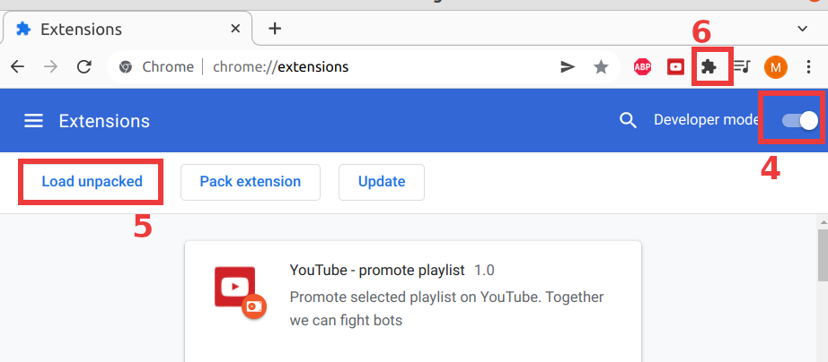
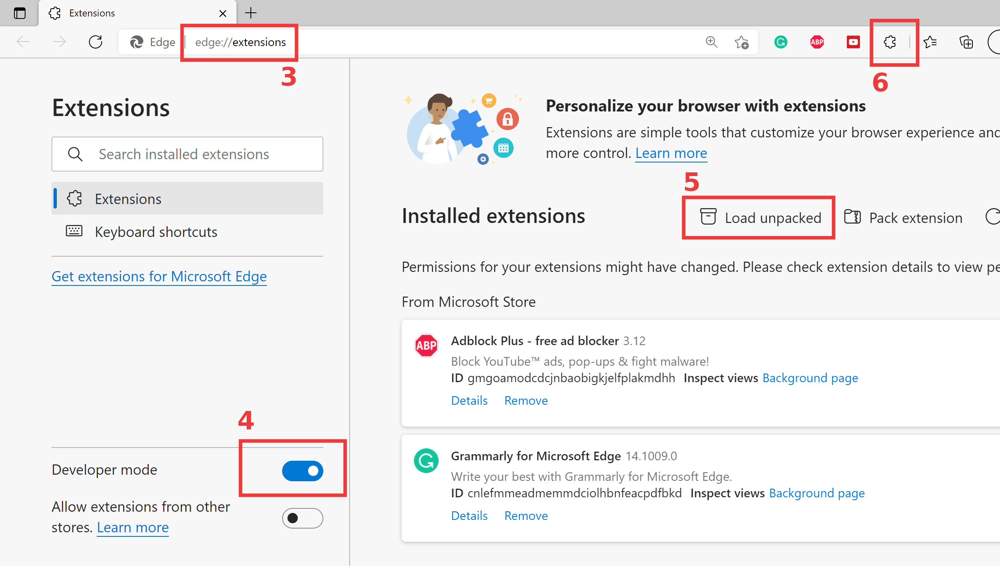

In the situation when most independent media are destroyed and social networks are blocked in Russia, YouTube becomes one of the few remaining platforms where people can share their opinion and get access to the independent sources of information.
According to @detoxbrainwash, one of the strategies used by V. Putin involves boosting propaganda materials on YouTube. As a result, content advocating the war in Ukraine and other Putin's crimes dominates in YouTube recommendations in the Russian segment.
We made a Chrome extension that opens independent YouTube channels telling truth about the war in Ukraine. It opens each channel in a separate tab, watches latest video for optimal time and likes it. Depending on your settings selection, it can also open a playlist with recommended videos instead of channels. If used collectively, we can affect YouTube recommendations.
Another version of the extension is also available - it allows to open your playlist instead of the recommended one.
The extension is published in Chrome Store - "Support free media on YouTube"
Another version of the extension where you can select a playlist - "Promote YouTube playlist"
You can also install both extensions locally:
- Download extension folder from GitHub - use this link for extension #1 or this link for extension #2.
- Unzip the archive in any location on your machine.
- Open Extentions manager in Chrome browser - copy this link to your browser chrome://extensions/
- Enable developer mode in the top right corner - see the screenshot.
- Click "Load unpacked" button in the top left corner to upload extension, select the extension folder.
- Extension is ready to use. To bookmark the extension, click "Extensions" button in the top right corner in the browser, then "Pin" icon next to extension name.
-
It is recommended to use YouTube AdBlock extension to skip ads.

- Download extension folder from GitHub - use this link for extension #1 or this link for extension #2.
- Unzip the archive in any location on your machine.
- Open Extentions manager in Edge browser - copy this link to your browser edge://extensions/
- Enable developer mode in the top right corner - see the screenshot.
- Click "Load unpacked" button in the top left corner to upload extension, select the extension folder.
- Extension is ready to use. To bookmark the extension, click "Extensions" button in the top right corner in the browser, then "Pin" icon next to extension name.
-
It is recommended to use YouTube AdBlock extension to skip ads.

If you create your own playlist, we suggest following these guidelines. It is important to keep videos simple enough and of a decent quality, so it is easier to understand the content for an unprepared person.
- The most effective would be for everyone to use the same playlist approved by the community. Because our resources are limited.
- Choose videos from trusted and popular channels - DW, Radio Freedom, Michael Nacki, Navalny Live, Michael Khodorkovsky, Yulia Latynina, Popular Politics, Ilya Yashin, Ekaterina Shulman, Vladimir Milov. For the same reason - our resources are limited.
- Choose videos with neutral titles. Remember we are trying to communicate with people who are affected by propaganda.
- Choose videos simple enough so unprepared people can understand it.
- Choose videos of a decent quality, to increase the chance of the video being actually watched.
- Avoid content that is too graphical. It will have the opposite effect.
- Choose famous/respected speakers for interviews.
- Instead of uploading your own video, try to ask a YouTuber you trust to make a video on a related topic.
- For YouTubers - please add english subtitles so it is easier to share a playlist with the international community.
Discord (ru) https://discord.gg/s7M4QnDtys
Twitter @Hattifnatt4r
We welcome developers who are willing to support the project